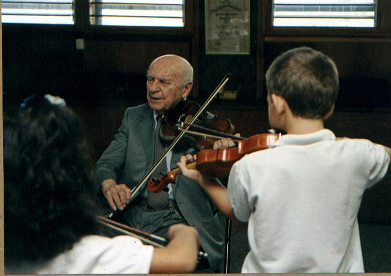

El Prof. Friedman falleció en Caracas el 24 de abril del
2002 a la edad de 94 años. Muchos de nosotros
asistimos a aplaudirle y a cantarle en su despedida en nombre de
todos los de nuestra graduación, y otros tanto le
escribieron algunas palabras de homenaje.

Himno de Colegio Emil Friedman
Compañeros escuchad!
Compañeros escuchad!
Nuestra mú-si-ca.
Trabajemos con tezón,
estudiemos con afán,
con dedi-ca-cíon.
Cuando suena la canción,
late alegre el corazón,
y el deber, y el deber no pesa más!
En la vida,
el dolor no reinará.
La canción, la canción triunfará!
Del Friedman he partido
y de pentagramas y corcheas nunca mas haba sabido
Nunca afiné instrumento alguno
mas clavija del tiempo siempre esgrimo
Triste, triste en su vuelo
la noticia se poso en mi oído
Nunca imaginé que el viejito
de ese lugar ya había partido...
Afortunada la imaginación
que nuevamente vida da a la razón
cuyo flashback sin ton ni son;
nos recuerda a ese señor
deambulando pasillos, repartiendo corazón...
Hoy he querido abrazar los pensamientos de todos...
Para un inmenso globo llenar
Y con música de sonrisas
Hasta el infinito hacerlo viajar...
Porque se que ahí el viejito
buen uso le sabrá dar
Llenara los auditorios celestiales
de espectáculo terrenal...
Al dejarnos salir del globo
en esencia espiritual...
Al viejito... música de nuestro vuelo...
Francisco Hung
Ayer estuve yo también un buen rato en la despedida al "Profe" Emil Friedman. A pesar de no haber sido uno de sus discípulos músicos, puede darse cuenta uno ahora que conocer a un personaje como Friedman ha sido un gran privilegio. Una gran persona que hizo de la música y la educación su vida y de Venezuela su Patria. Un ser humano muy especial que hizo por este País mucho más que muchos de los que hemos nacido aquí.
Como era de esperarse, la despedida fue multitudinaria y me gustó particularmente que no había tristeza en el ambiente, en vez de eso parecía una gran celebración y homenaje a la vida y la obra de ese Maestro que fue para todos.
Encontré allí a muchos que no había visto en tantos años y que, sorpresivamente, están enterados de lo que hemos hecho en este foro y quieren retomar la idea para hacer algo similar con sus promociones.
Nicolás Cirigliano
Yo estuve hoy cerca del final, cuando se llevaron el féretro. El coro y la orquesta de arcos cantaron y tocaron un requiem bellísimo que puso a todos a flotar en el aire y que seguro puso al viejito en el camino corto al cielo. Luego hubo aplausos infinitos, que no se acababan nunca, y cantamos todos el himno nacional y "Compañeros escuchad!" (la recuerdan).
Hubo muuuchas lágrimas, no solo por parte de las niños y niñas, sino también de las mujeres, hombres, viejitas, y viejitos por igual. Pero después de las lágrimas volvió la alegría, quizá porque no hay otra manera de despedir al viejito Friedman que sino con una sonrisa.
He de decir que con dificultad se encuentra a una multitud de ese tamaño en donde todos sean tan afinados. Aquello fue un coro de más de 500 personas, formado en gran parte por los que en algún tiempo integraron el coro del Colegio.
Fue definitivamente el colegio el que creó de muchas maneras el ambiente para que amistades imperecederas como las de este grupo existieran.
Voy a dar solo un pequeño ejemplo. Ayer, hablando con el profesor Egidio (lo recuerdan?), Nelson, y otra ex-alumna, le dije a Egidio que estaba seguro de que él siempre se daba cuenta de las trampas que hacíamos durante los exámenes, y el dijo que sí. Pienso que, a pesar de que eran trampas, él las dejaba pasar porque, por un lado, siempre las podía castigar con la nota, y, por otro, porque esa era una expresión de la complicidad y la solidaridad que imperaba entre nosotros.
También hablamos de que en cada generación hay alguien que decide hacer experimentos con sodio fuera del laboratorio, de las múltiples expulsiones del Prof. Benitez que nunca producían firmas en "el libro", de las escapadas a jugar voleibol cuando en el salón se estaba dando clase, y de muchas otras oportunidades en las que, a pesar de que tenían que poner cara muy seria ante nuestros "delitos", por dentro se morían de la risa mientras nos veían experimentar y convertirnos en personas.
El colegio fue nuestra casa durante la mayor parte del día por muchos años, y somos lo que somos en gran parte por lo que allí vivimos y aprendimos.
Juancarlo Añez
Gracias a todos por representarnos en la despedida al Maestro Friedman, que a todos nos marcó positivamente de por vida. Algunos se recuerdan de la ultima vez que lo vieron, yo no se por que, pero yo me recuerdo es de la primera vez que lo vi, en el año 1971, cuando al regresar de 4 años en USA, fuimos a varios colegios para ver en cual nos inscribían.
Me acuerdo claramente (a pesar de que solo tenia 6 años!) del Profesor Friedman cuando nos recibió y nos enseñó el Colegio, y ahí me quedé por los siguientes 10 años, y 31 años después sigue siendo parte de mi vida, a través de este foro. Es increíble, pero desde ayer que recibí la noticia en el e-mail de Marta, tengo esa imagen congelada en el cerebro del "viejito" Friedman la primera vez que lo vi.........
Maurizio Caputo
Hasta siempre maestro Friedman y gracias por todo lo que nos diste en vida y el legado que dejas después de tu muerte. Que bueno que estuvimos representados por ustedes en esta despedida. Todavía recuerdo cuando nos gritaba desde arriba a quienes estábamos en las canchas ¡que hacen pegando brincos, vengan a tocar el chelo ! La verdad nunca me incliné por la música pero esto no me alejó de él. Confieso que me encantaba que me pellizcara los cachetes sobre todo en esos días sensibles de nuestra adolescencia.
Jetty Mazzei
Al Maestro con cariño:
Gracias a la vida que me ha dado tanto...
Mi paso por el colegio Friedman esta entre mis mas bellos recuerdos. Las amistades que nacieron de esa época, que se cultivaron con los años y que las re-aparecieron a raíz de la iniciativa de organizar este foro -gracias amigos!!!- han enriquecido mi vida enormemente. El Maestro Friedman me ofreció la oportunidad de vivir un ambiente multi-cultural que expandió mis horizontes de manera definitiva. Siempre le estafe agradecida.
Me da alegría pensar que su despedida fue acompañada de lagrimas y de sonrisas. Una demostración de amor y reconocimiento a una persona que dio tanto para educar a tantos jóvenes.
Victoria Castells
Ha sido para mi muy emotivo leer las manifestaciones de cariño hacia el profesor Friedman, gracias a todos los que nos representaron en su despedida, gracias Juanca por hacernos recordar el himno que le cantaron.
Para mí el haber estudiado en el Friedman fue como atravesar una enorme puerta que me formó integralmente e hizo de mí una persona que ama la música, el deporte, las artes, el estudio. Gracias a Dios tuve la suerte de pertenecer a este grupo, quiero que sepan que con ustedes siempre me sentí en sintonía, porque compartíamos los mismos valores, y aún los seguimos compartiendo.
Hace pocos años me encontré al viejito en la panadería Danubio de Santa Rosa de Lima, nos saludamos con mucho cariño, con su calor y olor característicos. Sentí un poco de pena al darme cuenta que no podía ver bien, cuando el cajero le dió el vuelto me pidió que lo contara, no podía distinguir los billetes. Sin embargo estaba enterito, fuerte, como siempre.
Un beso a todos, y gracias de nuevo por compartir este momento y este foro.
Cariños,
Laura Orozco
Mas de una lagrima se me ha escapado al saber la noticia del querido "viejo" Friedman, al leer la letra del himno que nos transcribió Juancarlo y que cantaron todos una vez mas en su despedida. Nuevamente lamento no haber estado allí, esta vez para unirme a ese inmenso coro de voces que lo homenajeó tan merecidamente.
Pensando en él desde este inmenso afecto que todos compartimos, creo que otras de sus grandes enseñanzas, además de todo lo que ya han comentado, fueron la tolerancia a la diversidad, la generosidad y la amplitud de mirada.
En el colegio aprendimos a compartir con compañeros y hacer amigos de diversos orígenes, culturas y religiones, siendo esa diversidad parte importante de la riqueza de nuestra experiencia escolar . Algo que se agradece tanto, especialmente hoy en un mundo tan marcado por sentimientos de intolerancia, empeñado en resaltar las diferencias y no las semejanzas --a pesar de la mundialización o tal vez precisamente por ella .
Desde ese universo amplio de la música aprendimos con él de los límites infinitos de la cultura, lo que nos permitió superar, casi sin darnos cuenta, cualquier tipo de fronteras para buscar los puntos de encuentro. A pesar de su inmaterialidad, creo que ha sido la música el magma capaz de cohesionar muchas de nuestras vivencias en el colegio y de sensibilizar nuestra mirada dentro y fuera de él ( tanto para los que participaron directamente en ella como los que no). En este sentido me acuerdo, por ejemplo, del amplio repertorio de músicas que aprendimos a cantar en el coro, canciones que abarcaban desde los clásicos a los compositores de música popular venezolana, de la música hebrea a la música latinoamericana, de los blues y estándares americanos a la música étnica en general.
Pero me acuerdo también de su generosidad con todo aquel que se le acercaba a proponerle un proyecto, a hablarle de alguna idea nueva. Siempre estaba dispuesto a apoyarlas y estimularlas. Recuerdo cuando mi hermano, que tuvo siempre un marcado interés por las ciencias, le comentó que quería participar con un proyecto en CENAMEC, para lo cual necesitaba un espacio para poner sus cientos de ratones. Friedman no dudó en cederle un espacio por varios meses, cuando todavía existían los galpones, para montar sus experimentos. En ese lugar mi hermano pasaba horas durante los recreos y fuera de clases y Friedman lo visitaba con frecuencia para apoyarlo, interesado siempre en seguir de cerca los progresos de la investigación.
Estando ahora aquí en España y viviendo la experiencia y el ambiente escolar de mis hijos, valoro todavía más esas enseñanzas y ese amplio mundo que nos enseñó a apreciar. Cuando veo de cerca el problema tremendo de la inmigración latinoamericana, africana, sud-sahariana y marroquí; cuando observo la intolerancia tan grande que existe en aceptar a todo aquel que no sea un igual. En sociedades tan cerradas como ésta, principalmente por las posiciones más catalanistas, te das cuenta lo importante de enseñar precisamente esos valores de la tolerancia y la amplitud de mente, de la enorme riqueza de la multiculturalidad. Cuando se ven los brotes neonazi en Europa, en Austria, Alemania, Francia... la absurda tragedia del conflicto en el medio oriente..los nacionalismos y fundamentalismos a ultranza. Cuando se ve la fractura de un pais tan abierto y receptivo como Venezuela, ahora radicalmente dividido, probablemente sea el momento de recordar y no olvidar esto.
Ojalá este modelo educativo, sin dejar de reconocer las fallas que pueda tener, este ejemplo de vida que nos dejó el querido viejo pueda extenderse más allá del ámbito de la escolaridad privada en nuestro país. Probablemente seamos nosotros, sus miles de herederos, los que tengamos que seguir sembrando y cultivando sus importantes enseñanzas.
Un abrazo a todos,
Carola Barrios
¿Cuántos estudiantes pasamos por el colegio ubicado en la ruta A de Los Campitos en sus más de 50 años de vida?¿5 mil, 7 mil, 10 mil? Pues todos, seamos cuántos seamos, el número no importa, compartimos el sueño que nos dio el hombre cuyas ideas originaron una institución educativa que bautizó con su propio nombre y apellido: Emil Friedman. Los que estudiamos toda la vida en el Friedman sabemos que ese hombre pequeño, cuyas arrugas no sabían tapar el exceso de juventud, que despeinaba todas las cabezas que se le atravesaban en los recreos, que se asomaba en los salones en plena clase, que probaba los talentos musicales de sus alumnos prestándoles su propio violín, era el gran abuelo de todos, sobre todo con su gesto más inolvidable: cuando metía unos enormes pellizcos en los cachetes que él aseguraba eran su mayor demostración de cariño. Y lo eran.
El sabía que la educación integral tenía que estar basada en la comunión entre Ciencia y Arte y de hecho, el que no tocaba un instrumento (como fue mi caso, por ejemplo, que soy sorda natural) se hizo enamorado de la música; la formación científica no quedaba por fuera y es por ello que además de ser un colegio que fue cantera para grandes músicos, también han salido exitosos científicos, médicos, ingenieros, artistas plásticos, escritores. Y el que toca flauta es excelente además con la matemática, y el que se hizo galeno jamás olvidó su pasión por el teatro; y hay quien es físico y poeta; biólogo y defensor de los Derechos Humanos. Nos inculcó el amor al estudio, el valor de la lectura y también la pasión por la vida. El sonido del violín es para cualquier egresado del Friedman el reencuentro con su infancia. Hay una historia que me une a él. Mi mamá, cuando fue a inscribirme en primer grado a los 5 años de edad le confesó, preocupada, que yo era hija "natural". La angustia de ella acabó con la sencilla respuesta de Friedman, que sonriente le respondió: "todos los hijos son naturales" y tras ponerme a pintar y escribir algunas frases me ubicó en primer grado.
Mireya Tabuas
Estimados amigos del Colegio Emil Friedman, estimada Elvia, Me ha llenado de inmensa tristeza, la pérdida de nuestro Abuelito Friedman, como siempre le conocimos. Pienso que cada uno de nosotros debe sentir que ha perdido parte importante de su crecimiento como persona. El Abuelito Friedman siempre fue una persona querida, un hombre recto, leal, sincero. Siempre quiso tener muchos hijos, y los tuvo. Los tuvo en un país que lo acogió, porque él era eso, un buen hombre. Se encontró en el camino con su pilar fundamental, Elvia. Ella conoció al hombre que cambiaría su vida y de cada uno de los que pasáramos por ese colegio.
Recuerdo particularmente cuando él me agarraba los cachetes y me movía la cabeza de un lado al otro, claro se lo hacía a todos!!! Me acuerdo cuando todos pasábamos por su lado y nos abrazaba cariñosamente, nunca iba apurado cuando un niño se le acercaba. No había nada más importante para él que sus hijos, nosotros. Y la emoción que sentía cuando veía que su esposa dirigía el coro, cuando alguna vez representamos al colegio en una competencia de natación o en un concierto.
Cada uno de los que hemos salido de ahí, llevamos un recuerdo bonito, un recuerdo feliz, porque él nos hacía sentir bien. Porque sabemos que "no hay cultura, sin cultura musical". Porque cuando ahora lo recordamos, no nos acordamos de que alguna vez nos pusiera mala cara (alguna vez tal vez!).
También quiero recordar, que afortunadamente tuve la dicha de verlo hace como unos tres años, antes de venir a vivir a los Estados Unidos, que mi esposo Julio César Camacho, me pidió que hiciera una cita para que lo entrevistara para Radio Caracas Radio. Mi esposo quedó encantado y sorprendido de un ser como el Abuelito Friedman. Se que es difícil en un momento como este conformarse, pero debemos recordarlo como una excelente persona que solo sabía hacer el bien. Lamento personalmente la pérdida del Abuelito Friedamn. Por favor hagan extensivas estas palabras a Doña Elvia y sus familiares.
Nathalie Conde-Jahn de Camacho
*